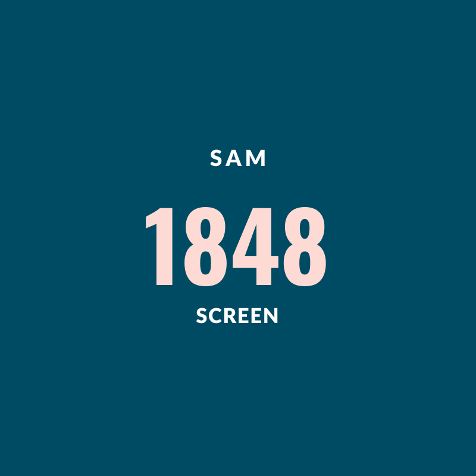

<nav
  id="main-nav"
  class="navbar navbar-expand-md bg-primary fixed-top py-4 navbar-dark"
>
  <div class="container">
    <a routerLink="./" class="navbar-brand">
      
      <h3 class="d-inline align-middle">1848 Screen</h3>
    </a>
    <button
      class="navbar-toggler"
      data-toggle="collapse"
      data-target="#navbarCollapse"
      (click)="toggleNavbar()"
    >
      <span class="navbar-toggler-icon"></span>
    </button>
    <div
      class="collapse navbar-collapse"
      [ngClass]="{ show: navbarOpen }"
      id="navbarCollapse"
    >
      <ul class="navbar-nav ml-auto">
        <li class="nav-item">
          <a [routerLink]="['/screen']" class="nav-link">Screener</a>
        </li>
      </ul>
    </div>
  </div>
</nav>
